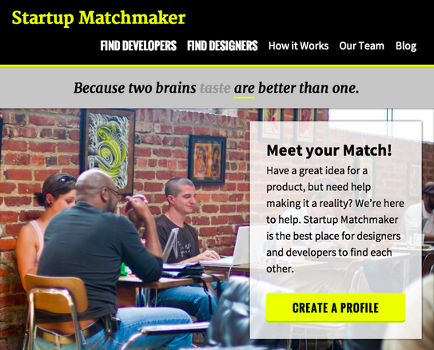

Experience
I recently graduated from a Front-End Web Development course at General Assembly where I learned HTML, CSS, JavaScript, jQuery and how to be an awesome Front-End Web Developer! During my spare time, I enjoy senior water aerobics, pickling, and spending time with my goldfish, Jerry.
Relevant Experience
- Web Developer, Relaxr 2015 - present
Developed a multi-column layout blog, landing page, and contact forms that render on mobile devices.

- Web Developer, Startup Matchmaker 2015 - present
Used a design team's wireframes to develop this company's responsive homepage.

- Web Developer, CitiPix 2015 – present
Built web app prototype that allows users to store and quickly retrieve photos using keywords.

EDUCATION
- General Assembly — FEWD 2015
- College of Soft Knocks — B.S. 2009
- School of Hard Knocks — 2005 (Honors)